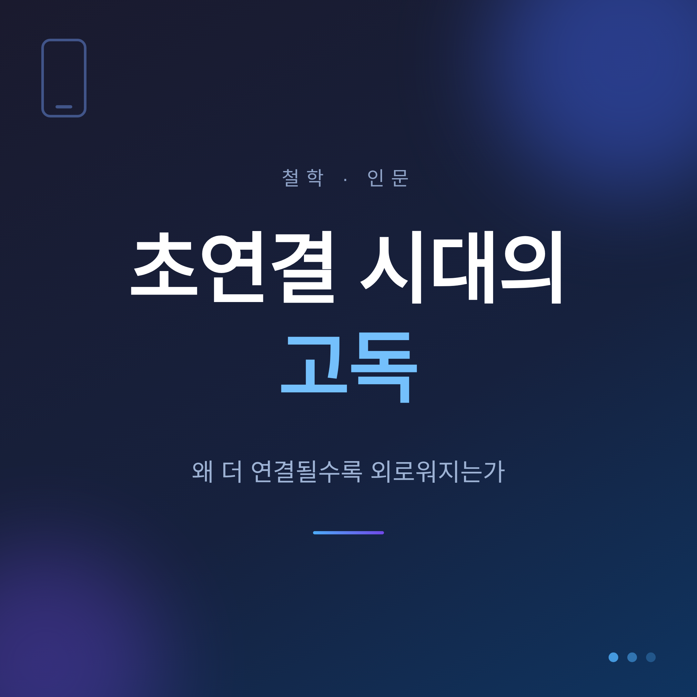
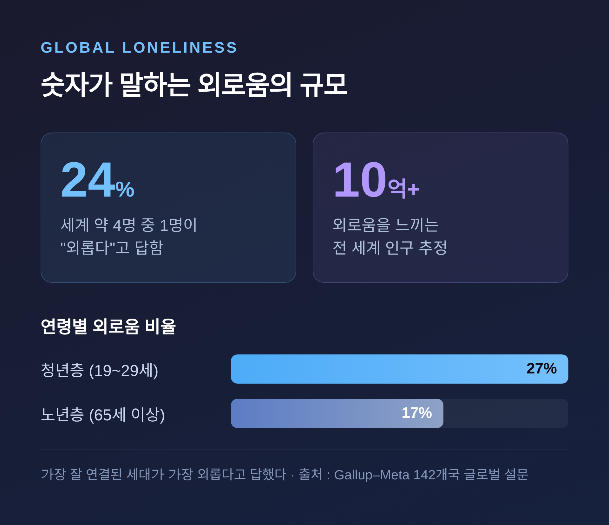
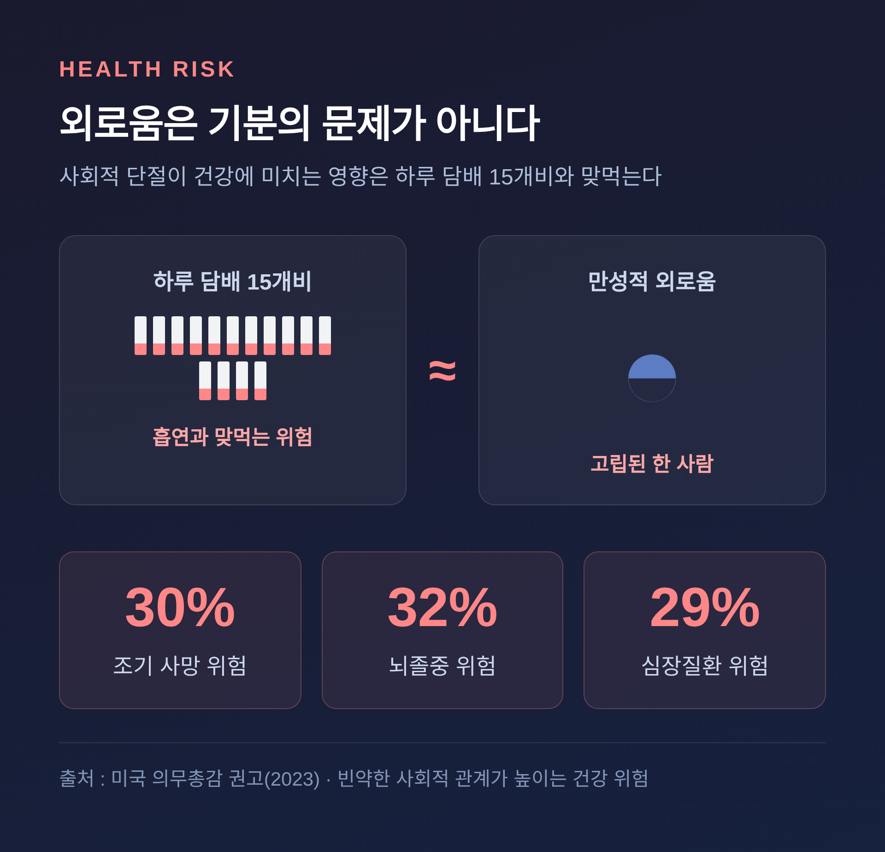
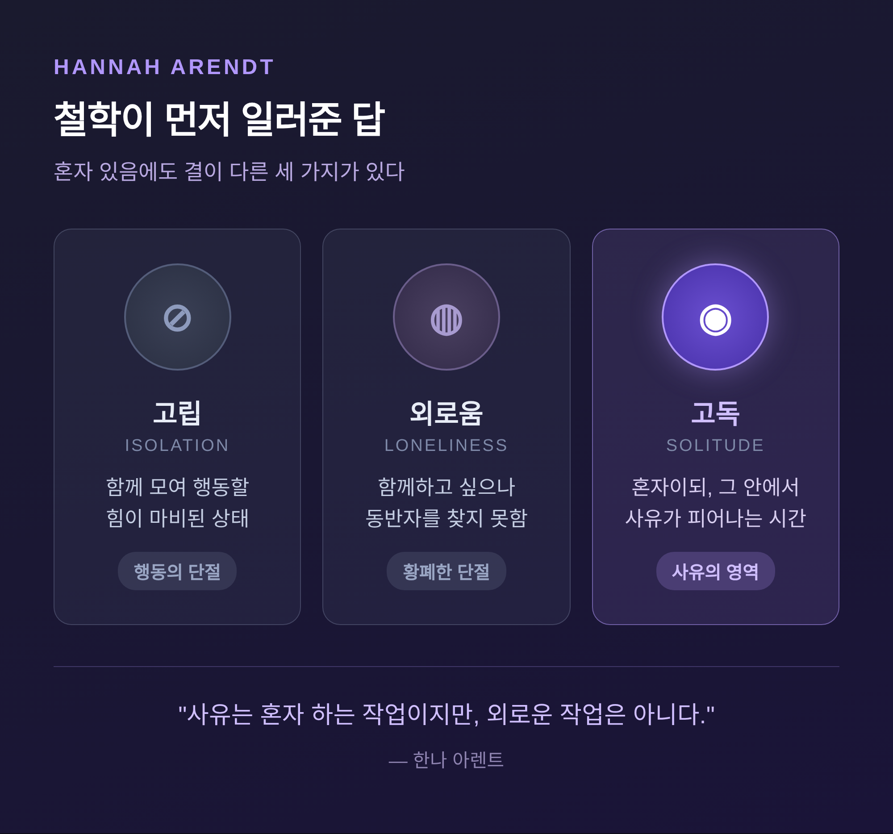

초연결 시대의 고독, 왜 더 연결될수록 외로워지는가

손안에 온 세계가 들어와 있는데도 마음 한구석이 비어 있다고 느낀 적이 있으실 겁니다. 이번 글에서는 "더 많이 연결될수록 더 외로워지는" 초연결 시대의 역설을 정리해 보겠습니다. 세 줄로 먼저 답을 드리면 이렇습니다.
- 우리는 '사회적 고립'은 줄였지만 '외로움'은 줄이지 못했습니다. 연결의 양이 질을 보장하지 않기 때문입니다.
- 전 세계 4명 중 1명이 외롭고, 가장 잘 연결된 청년층이 오히려 가장 외롭습니다.
- 범인은 기술 자체가 아니라 우리가 기술을 쓰는 방식입니다. 그리고 그 출구는 철학이 먼저 일러주었습니다.
고립과 외로움은 같은 말이 아닙니다
이 이야기의 출발점은 두 단어를 나누는 데 있습니다.
사회적 고립은 객관적인 상태입니다. 가족·친구·공동체와의 접촉이 실제로 끊긴, 눈으로 관찰하고 측정할 수 있는 물리적 조건이지요.
외로움은 다릅니다. "내가 원하는 연결"과 "지금 가진 연결" 사이의 간극에서 오는 주관적인 괴로움입니다.
그래서 두 가지는 따로 존재할 수 있습니다. 사람들 한가운데 있어도 관계에 깊이가 없으면 외로울 수 있습니다. 반대로 혼자 있어도 외롭지 않을 수 있습니다.
혼자 있음이 곧 외로움은 아닙니다. 함께 있음이 곧 외롭지 않음도 아닙니다.
초연결 시대의 역설은 바로 이 틈에서 자랍니다. 언제든 연결될 수 있게 되면서 사회적 고립은 줄었습니다. 그러나 외로움이라는 주관적 단절감은 줄지 않았습니다. 어쩌면 더 깊어졌습니다.
숫자가 말하는 외로움의 규모

느낌만의 이야기가 아닙니다.
전 세계 142개국을 조사한 갤럽-메타(Gallup-Meta) 글로벌 설문이 있습니다. 이에 따르면 전 세계 약 4명 중 1명, 즉 24%가 "매우" 또는 "상당히" 외롭다고 답했습니다. 머릿수로 환산하면 10억 명이 넘습니다.
여기서 한 가지 역설이 눈에 띕니다. 외로움이 가장 높은 집단은 디지털 연결에 가장 능숙한 청년층(19~29세)으로 27%였습니다. 가장 낮은 집단은 노년층(65세 이상)으로 17%였습니다.
예전 같으면 노인이 더 외로울 것이라 짐작했을 겁니다. 지금은 가장 잘 연결된 세대가 가장 외롭다고 답합니다.
일터도 마찬가지였습니다. 완전 원격근무자의 외로움(25%)이 완전 출근자(16%)보다 뚜렷이 높았고, 하이브리드 근무자는 그 중간(21%)이었습니다. 미국 의무총감 비벡 머시(Vivek Murthy)는 이를 "외로움의 유행병"이라 불렀습니다.
외로움은 기분의 문제가 아닙니다

외로움을 그저 마음의 일로 두기 어려운 이유가 있습니다.
2023년 미국 의무총감은 81쪽 분량의 공식 권고를 통해 외로움을 공중보건 위기로 규정했습니다. 그 안의 한 문장이 특히 무겁습니다.
사회적 단절이 건강에 미치는 영향은 하루 담배 15개비를 피우는 것과 비슷하다는 것입니다. 비만이나 신체활동 부족보다도 영향이 크다고 했습니다.
수치로 보면 더 분명합니다. 빈약한 사회적 관계는 조기 사망 위험을 약 30% 높입니다. 뇌졸중 위험은 32%, 심장질환 위험은 29% 증가하는 것으로 나타났습니다.
외로움은 마음을 갉아먹는 데서 그치지 않습니다. 몸과 수명에까지 닿는 문제인 셈입니다.
그렇다면 SNS가 범인일까요
여기서 흔한 결론으로 서둘러 가지 않으려 합니다. "SNS가 우리를 외롭게 만든다"는 등식은 생각만큼 단순하지 않습니다.
2025년 영국 청년 1,632명을 추적한 코호트 연구가 있습니다. 온라인에서 보낸 전체 시간이 길수록 외로움은 컸습니다. 그런데 페이스북·인스타그램·트위터 같은 SNS 사용 자체는 외로움과 유의한 관련이 없었습니다.
플랫폼에 따라 방향도 갈렸습니다. 레딧과 데이팅 앱 사용은 외로움과 함께 높아졌고, 왓츠앱 사용은 오히려 외로움이 낮은 쪽과 연관됐습니다.
핵심은 "무엇을 쓰느냐"보다 "어떻게 쓰느냐"였습니다. 강박적으로 매달려 쓰거나 온라인에서 피해를 겪은 사람이 더 외로웠습니다. 가만히 들여다보기만 하는 수동적 소비가, 서로 주고받는 방식보다 외로움과 더 가까웠습니다.
물론 다른 목소리도 있습니다. 2025년 10월 오리건주립대 연구는 과도한 SNS 사용이 미국 성인의 외로움 위험을 두 배로 높인다고 보고했습니다.
두 연구가 어긋나는 듯 보이지만, 겹치는 자리가 있습니다. "전체 온라인 시간의 과다"와 "사용 방식"이 위험 요인이라는 점입니다.
기술은 범인이라기보다 거울에 가깝습니다. 연결의 양이 아니라 질, 그리고 우리가 화면을 마주하는 태도가 외로움을 가른다는 뜻입니다.
철학이 먼저 일러준 답 — 외로움과 고독은 다르다

이 역설을 가장 먼저 들여다본 이들은 철학자였습니다.
한나 아렌트는 비슷해 보이는 세 단어를 갈라 놓았습니다. 고립은 함께 모여 행동할 힘이 마비된 상태입니다. 외로움은 함께하고 싶은데 동반자를 찾지 못할 때 찾아옵니다.
그리고 고독이 있습니다. 고독은 외로움과 결정적으로 다릅니다. 혼자 있되, 그 혼자 있음 속에서 사유가 피어나는 시간입니다.
아렌트의 표현을 빌리면 이렇습니다. "사유는 혼자 하는 작업이지만, 외로운 작업은 아니다."
MIT의 사회심리학자 셰리 터클은 이 통찰을 디지털 시대로 끌고 왔습니다. 그의 책 제목이 곧 진단입니다. "외로워지는 사람들(Alone Together)."
온라인에서 우리는 누군가와 함께 있다는 환상에 빠집니다. 그러나 끊임없는 연결은 결국 깊은 고독으로 이어진다고 그는 말합니다. 부제가 핵심을 찌릅니다. "왜 우리는 기술에는 더 많은 것을, 서로에게는 더 적은 것을 기대하는가."
폴란드 사회학자 지그문트 바우만은 이 변화를 사회 구조에서 찾았습니다. 그는 현대를 '액체 근대'라 불렀습니다. 규범도, 정체성도, 관계도 견고한 형태를 잃고 유동적으로 녹아내린 시대라는 것입니다.
관계가 액체처럼 일회적이고 소비적으로 바뀐 자리에서, 소통 수단은 늘어도 외로움은 함께 늘어납니다. 정체성마저 공동체에 속한 결과가 아니라, 슈퍼마켓에서 고르듯 집어드는 또 하나의 소비 상품이 됩니다.
세 사람의 진단은 한 곳에서 만납니다. 이로운 '고독'과 파괴적인 '외로움'은 다르다는 것입니다. 초연결 시대는 혼자 사유할 고독을 빼앗으면서, 동시에 외로움을 키웁니다.
그러면 어떻게 살아야 할까요
처방은 거창하지 않습니다. 다만 방향이 분명합니다.
먼저 양보다 질입니다. 중요한 것은 아는 사람의 수가 아니라 관계의 깊이입니다. 한 연구는 친밀한 관계 하나를 만드는 데 약 200시간의 의도적인 시간이 필요하다고 보았습니다. 연결은 저절로 깊어지지 않습니다. 마음을 들여야 깊어집니다.
다음은 고독을 되찾는 일입니다. 혼자 있는 시간을 외로움으로 흘려보내지 않고, 자기 자신과 마주하는 시간으로 바꾸는 것입니다. 아렌트가 말한 사유의 자리가 바로 거기입니다.
마지막은 취약함을 드러내는 용기입니다. 열린 마음으로 정직하게 말하고, 상대의 말을 끝까지 듣는 것. 약한 모습을 보일 수 있는 관계에서 신뢰와 공감이 자랍니다.
다만 솔직히 인정할 부분도 있습니다. 사람마다 결이 다릅니다. 외향적인 사람은 어울림에서 힘을 얻고, 내향적인 사람은 홀로 있음에서 힘을 얻습니다. 정답은 하나가 아닙니다. 자신에게 맞는 길을 고르시는 편이 좋겠습니다.
정리하면 이렇습니다.
연결의 도구는 그 어느 때보다 많아졌지만, 도구가 곧 관계는 아니었습니다. 우리에게 모자란 것은 더 많은 연결이 아니라, 더 깊은 연결이었습니다.
"혼자 있음에는 두 가지가 있다. 나를 채우는 고독과, 나를 비우는 외로움."
화면 속 수많은 알림 사이에서 문득 외롭다고 느끼셨다면, 그것은 약함이 아닙니다. 더 깊은 연결을 향한 마음이 보내는 신호일지도 모릅니다. 오늘 밤만큼은 화면을 잠시 내려놓고, 한 사람의 얼굴을 천천히 떠올려 보시면 어떨까요.